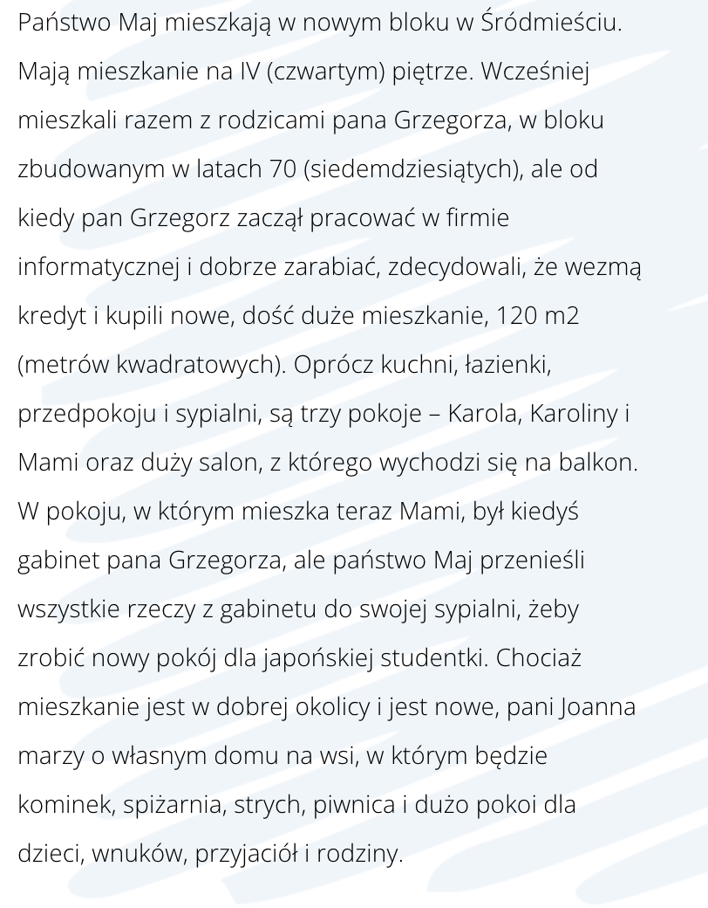
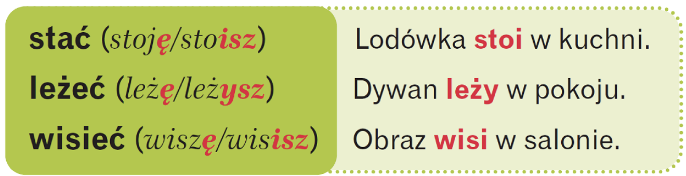
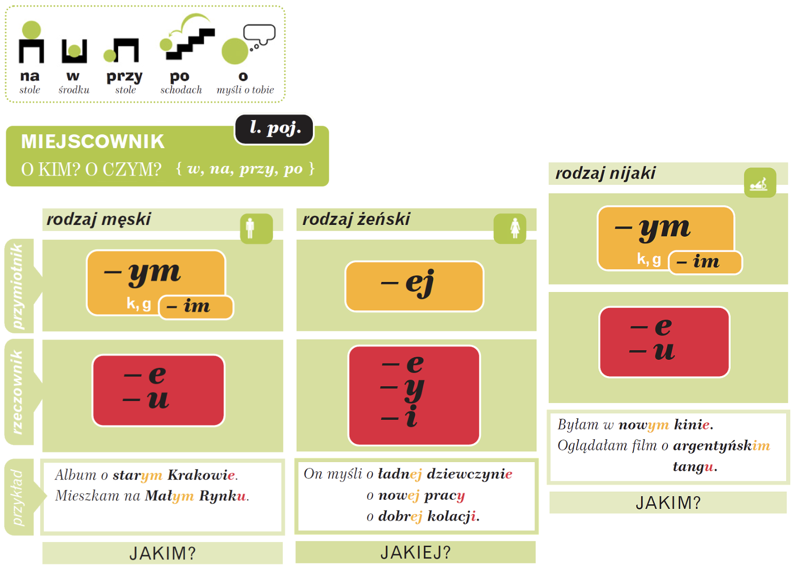
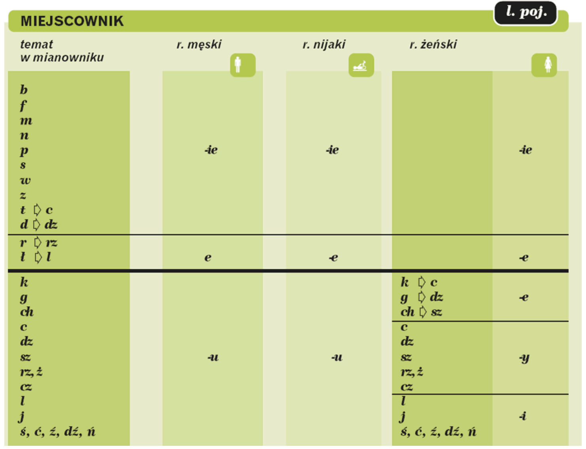
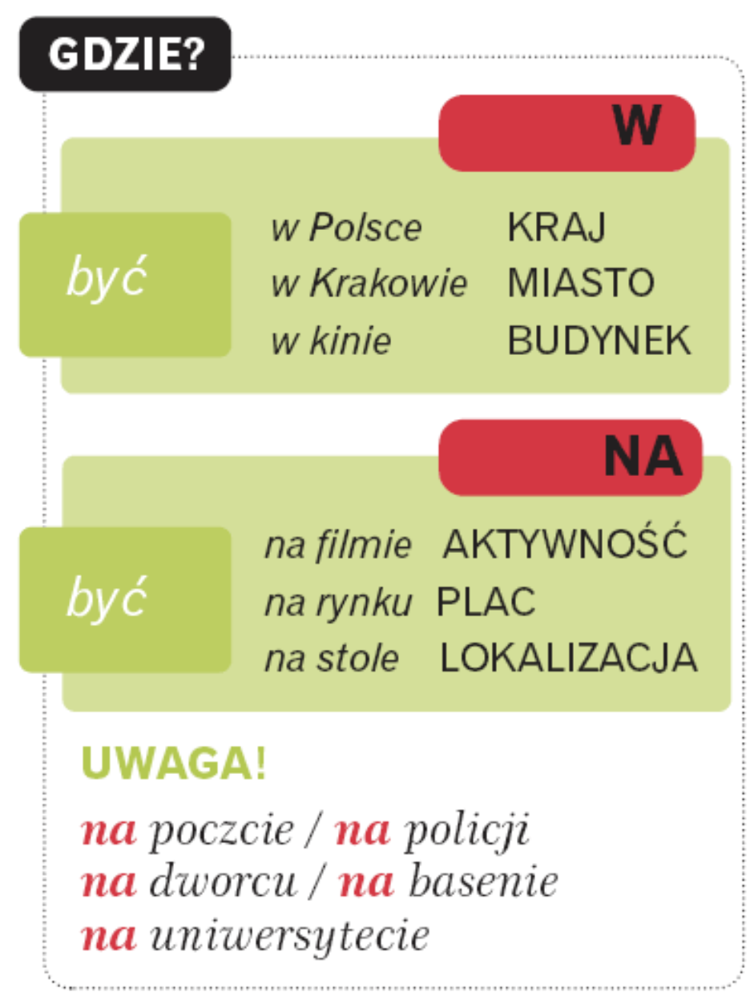
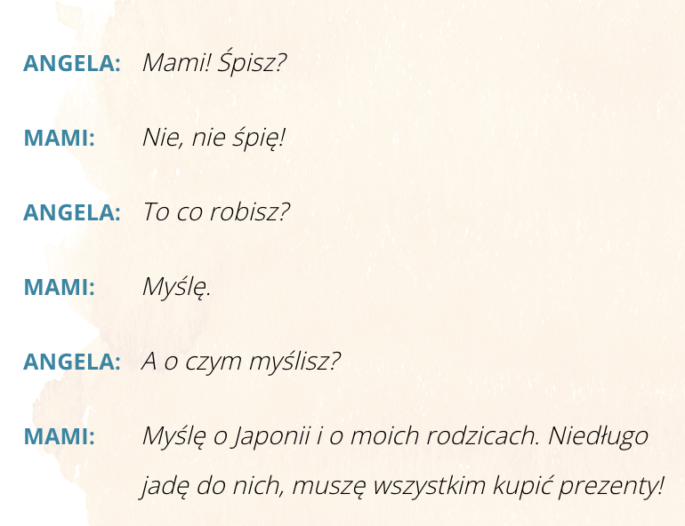
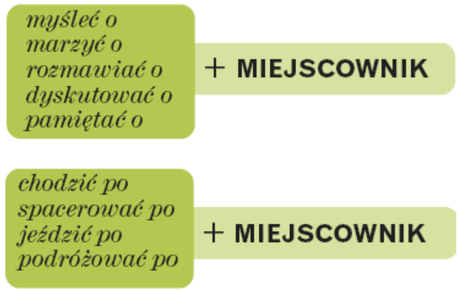
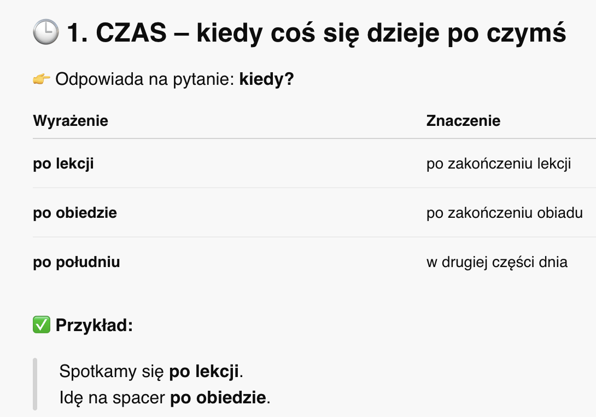
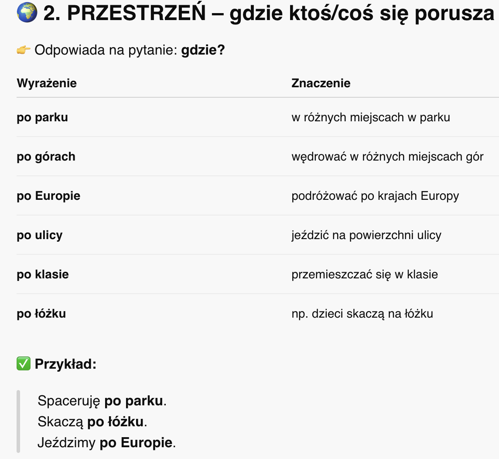

Krok Po Kroku 1
Temat 18 - Pokaż mi swoje mieszkanie ...
A. Ciasne, ale własne!
słownistwo - A. Ciasne, ale własne! >>
W języku polskim poziom zero w budynku to parter, a dopiero kolejny to pierwsze piętro.
O piętro pytamy za pomocą zaimka który:
Na którym piętrze?
Dialog 1


B. Gdzie on jest? Miejscownik
słownistwo - B. Gdzie on jest? Miejscownik >>


MIEJSCOWNIK (ПРЕДЛОЖНЫЙ ПАДЕЖ) – szósty przypadek
pytanie:
O kim? O czym?/ W kim? W czym?/ Na kim? Na czym?/
Przy kim? Przy czym? / Po kim? Po
czym?
и употребляется всегда с предлогом.
🔹 1. Когда используется?
| 🧭 a) Локализация — Где? | ⏰ b) Время — Когда? | 🎯 c) Цель (событие, действие) | 🔑 d) Предлоги, которые требуют мест. падеж: |
|---|---|---|---|
| w Polsce (в Польше) 🇵🇱 | w zimie (зимой) ❄️ | na filmie (на фильме) 🎬 | w (в) |
| na stole (на столе) 🍽️ | w styczniu (в январе) 📅 | na imprezie (на вечеринке) 🎉 | na (на) |
| przy tablicy (у доски) 🧑🏫 | w zeszłym tygodniu (на прошлой неделе) | na obiedzie (на обеде) 🍽️ | przy (у) |
| o ósmej (в восемь часов) 🕗 | o (о) / po (после) |
❗ Только przy всегда требует miejscownik. Остальные могут сочетаться и с другими падежами (напр. по глаголам движения).
✍️ Końcówki – Окончания в miejscowniku
🧱 Zasada: окончания зависят от последней согласной основы слова
🧠 Как работает таблица?
-
Разделена по роду:
- 🧍♂️ RODZAJ MĘSKI — мужской род
- ⚙️ RODZAJ NIJAKI — средний род
- 🧍♀️ RODZAJ ŻEŃSKI — женский род
-
Группировка по последней согласной в слове. От этого зависит:
- какая гласная будет в окончании
- будет ли чередование (например: k → c, g → dz)
-
Окончания местного падежа:
- –e
- –ie
- –u
- –y / –i (в женском роде)
🧩 Пример заполнения по столбцу:
🔸 МУЖСКОЙ РОД (Rodzaj męski), слово sklep (магазин):
- Кончается на: spółgłoskę twardą p
- По таблице: это группа
b, f, m, n, p, s, w, z, t, d - Сюда подходит окончание –ie
- Смотрим чередование: p → pie
✅ W sklepie — в магазине 🛒
🔸 СРЕДНИЙ РОД (Rodzaj nijaki), слово okno (окно):
- Оканчивается на: -o, перед этим — n
- Сюда подойдёт также –ie
- Получается: w oknie — в окне 🪟
🔸 ЖЕНСКИЙ РОД (Rodzaj żeński), слово kobieta (женщина):
- Заканчивается на -a, перед этим t
- t → końcówka –cie
- Получается: o kobiecie 👩

C. Marzę o dalekich podróżach
Dialog 2


🗣️ Po czasownikach typu:
Celownik (komu? czemu?) 🎁
- mówić (говорить),
- opowiadać (рассказывать),
- rozmawiać (разговаривать),
- dyskutować (дискутировать),
- myśleć (думать),
- marzyć (мечтать)
👉 używamy przyimka o + miejscownik (предложный падеж).
🔹 Przykłady (Примеры):
- Myślę o was bardzo często. 💭 Я часто думаю о вас.
- On ciekawie opowiada o swoich podróżach. 🌍 Он интересно рассказывает о своих путешествиях.
- O czym oni dyskutują? 🗨️ О чём они спорят?
🧩 Przyimek „po” + miejscownik
Używany w dwóch głównych sytuacjach:


📌 Gramatycznie:
W każdej z tych sytuacji rzeczownik po „po” stoi w miejscowniku:
- lekcja → po lekcji
- obiad → po obiedzie
- góry → po górach
- Europa → po Europie